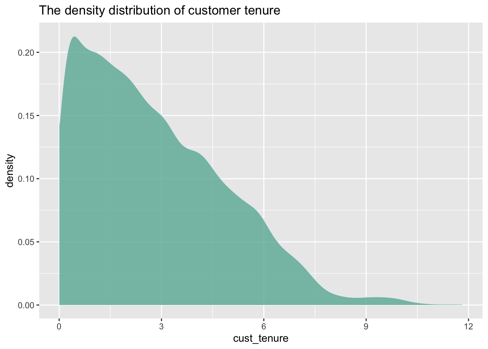
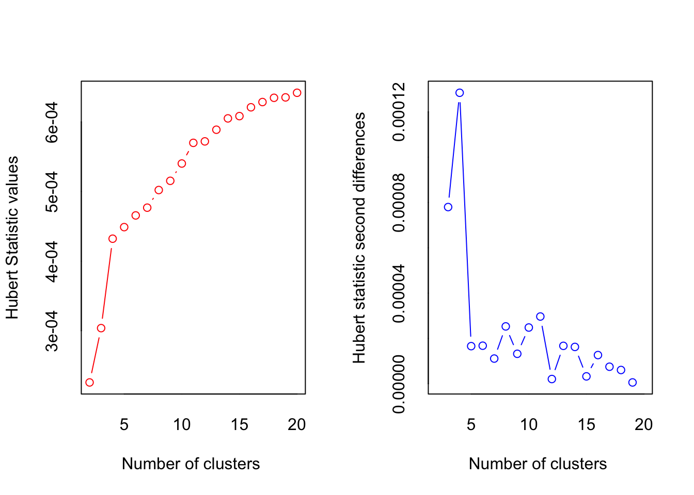

##check rows and columns in data
dim(data1)## [1] 1741041 9str(data1)## 'data.frame': 1741041 obs. of 9 variables:
## $ cust_id : int 67 67 67 67 67 67 67 67 67 67 ...
## $ yearmonth : int 201012 201101 201102 201103 201104 201105 201106 201107 201108 201109 ...
## $ survey_date : Factor w/ 2619 levels "","01/01/2014",..: 1 1 1 1 1 1 1 1 1 1 ...
## $ months_since_survey: int -64 -63 -62 -61 -60 -59 -58 -57 -56 -55 ...
## $ satis_survey : int NA NA NA NA NA NA NA NA NA NA ...
## $ cust_age : num 31.8 31.9 32 32.1 32.1 ...
## $ cust_tenure : num 0.118 0.203 0.279 0.364 0.446 ...
## $ total_investments : int 14 14 14 14 14 14 14 14 14 14 ...
## $ tottrans : int 0 0 0 0 4 0 28 45 84 76 ...Before doing any data cleaning, we report how many customers answered a 1,2,3,4,5 on the satis_survey variable.
##PART A.
library(dplyr)
library(lubridate)
library(tidyr)
library(ggplot2)
library(data.table)
library(sqldf)
library(cluster)
library(NbClust)
library(factoextra)
#counts
count_survey<-as.data.frame(table(data1$satis_survey))
#counts and percentages
total_survey<-sum(!is.na(data1$satis_survey))
count_survey$percentage<-with(count_survey,Freq/total_survey*100)
colnames(count_survey)<-c('Ratings','Counts','Percentages')
count_survey## Ratings Counts Percentages
## 1 1 5061 17.02493
## 2 2 5144 17.30413
## 3 3 5494 18.48152
## 4 4 6403 21.53934
## 5 5 7625 25.65008We also found out how many surveys were conducted by month for the entire sample.
#convert factor to date
data1$survey_date_convert<-mdy(data1$survey_date)
#Extract month
data1$survey_month<-month(mdy(data1$survey_date))
#counts by month
count_survey_by_month<-as.data.frame(table(data1$survey_month))
mymonth<-c('January','February','March','April','May','June','July','August','September','October','November','December')
colnames(count_survey_by_month)<-c('Month','Counts of survey')
count_survey_by_month$Month<-mymonth[count_survey_by_month$Month]
count_survey_by_month## Month Counts of survey
## 1 January 2425
## 2 February 2532
## 3 March 2402
## 4 April 2396
## 5 May 2353
## 6 June 2450
## 7 July 2473
## 8 August 2542
## 9 September 2532
## 10 October 2748
## 11 November 2439
## 12 December 2435The survey shows that around 26% of surveyed customers giving rating of 5 and 17% giving rating of 1. We can’t say the firm has a high customers satisfaction level because only 1⁄4 of the customers are fully satisfied with the firm and less than 50% of customers feel “very satisfied” or “satisfied”.
Negative or missing values for total_investments (dollars can’t be negative, or missing)
Zero, negative or missing values for either cust_age, cust_tenure, or tottrans
#remove customers
subset1<-data1[is.na(data_org$total_investments) |
data_org$total_investments< 0 |
is.na(data_org$cust_age) |
is.na(data_org$cust_tenure) |
is.na(data_org$tottrans) |
data_org$cust_ag <=0 |
data_org$cust_tenur <=0 |
data_org$tottrans <=0 ,'cust_id']
# number of removed customers
length(unique(subset1)) ## [1] 17227Removed customers: 17,227
# the cleaned data
data2<-data_org[!(data_org$cust_id %in% unique(subset1)),]
# number of remaining rows
dim(data2)## [1] 413436 9 # number of removed rows
diff(dim(data2)-dim(data_org))## [1] 1327605 #remaining customers
length(unique(data2$cust_id))## [1] 7773Remaining customers: 7,773
There is too much impossible data in this dataset which is uncommon. Out of 25000 customers, we removed more than half of them and only 7,773 remains which is way less data than the original ones. More than half of the rows were removed from the dataset, leaving only around 23% of the original data. So there might be a problem on the firm’s data.
In order to ensure that the analysis is not heavily influenced by any outlier customers with extreme values, we will remove any customers in the remaining dataset who have data values in the top 1% for either monthly investments or monthly transactions. These customers may not be representative of the overall customer base and should be removed in their entirety.
##PART C.
# top 1% total investment and tottrans
top1_inv<-quantile(data2$total_investments, probs=0.99, names=FALSE)
top1_inv## [1] 424080top1_trans<- quantile(data2$tottrans, probs=0.99, names=FALSE)
top1_trans## [1] 201 # remove outliers
subset2<-data2[data2$total_investments>= top1_inv|
data2$tottrans>= top1_trans,'cust_id']
# number of additional removed customers
length(unique(subset2))## [1] 745Removed customers: 745
# cleaned data
data3<-data2[!(data2$cust_id %in% unique(subset2)),]
# remaining rows
dim(data3)## [1] 368868 9 # number of romoved rows
dim(data2)-dim(data3)## [1] 44568 0# remaining customers
length(unique(data3$cust_id))## [1] 7028Remaining customers: 7,028
##PART D.
# remove na in the satis_survey
data4<-data3[!is.na(data3$satis_survey),]
# chart 1
data5<-data4[,c("cust_age","total_investments","satis_survey")]
data5$Age<-cut(data5$cust_age,c(-Inf,30,45,60,Inf),
labels=c('17-30','31-45','46-60','60+'))
ggplot(data5,aes(x=satis_survey,y=total_investments,fill=Age)) +
geom_col() +
scale_y_continuous(
labels = scales::number_format(accuracy = 0.1,
decimal.mark = ',')) +
ggtitle("Relationship between satis_survey and total_ investments")+
xlab("Customer Satisfaction Ratings") + ylab("Total Investments") The graph shows that customers who give a rating of 5 make more investments to the company, compared to the rest of rating groups. With higher customer satisfaction levels, customers tend to invest more to the company and therefore, if the company wants to attract more investments, they need to maintain a high customer satisfaction level.
Additionally, the age group 17-30 and above 60 give higher rating of 4 or 5 which generates higher investments. Therefore, we recommend that the company should target mainly people in age groups of 60+ and 17-30 when putting out advertisements so that they could increase the chance to attract more investments.
# chart 2 - lollipop plot
data4%>%
tail(350) %>%
ggplot( aes(x=cust_tenure, y= tottrans )) +
geom_line() +
geom_point() +
ggtitle("Relationship between customer tenure and total transactions")#chart 3 - density
data4 %>%
filter( cust_tenure<12 ) %>%
ggplot( aes(x=cust_tenure)) +
geom_density(fill="#69b3a2", color="#e9ecef", alpha=0.8)+
ggtitle("The density distribution of customer tenure")
We can see the density of customer tenure substantially reduces as the number of customer tenure increases which indicates that people are generally not having a relationship with the company for too long. Most of customers tend to stay with the company for 1 to 5 years, approximately.
We will continue doing analysis based on the remaining 7,028 customers from Part 1.
There’s another issue to address in the data: The firm has reported data tracking issues because sometimes entire rows of data are missing for some customers. Customers should have record for every month since they became customers of the firm but some customers are missing data for one or more months. And we need to remove all of these customers who are missing one or more data rows over time.
##PART E.
time.diff=c(diff(data$months_since_survey),order_by = data$cust_id)
#customers w/ date issue
bad.cust=sort(unique(data$cust_id[time.diff>1]))
length(unique(bad.cust))## [1] 4219We found out there are 4,219 customers with date issue.
#rows removed
removed=data$cust_id %in% unique(bad.cust)
#new data
data2=data[!(data$cust_id %in% unique(bad.cust)),]
#remaining rows
dim(data2)## [1] 117140 9 #remaining customers
length(unique(data2$cust_id))## [1] 2809After we removed the customers with date issue, we had 2,809 remaining customers.
Another important issue to address with the firm’s surveys is that customers are only supposed to be surveyed one time. However, some customers might have been surveyed more than once or not at all. We should only retain customers who were surveyed exactly once during the study period, and remove all other customers, including any customers surveyed two or more times, or not surveyed at all.
##PART F.
#convert factor to date
data2$surveydates.convert <- as.Date(data2$survey_date, format="%m/%d/%y")
#create frequency table
subset1=data2[,c('cust_id','surveydates.convert')]
subset2=subset1[!(is.na(subset1$surveydates.convert)),]
freq.count=as.data.frame(table(subset2$cust_id))
colnames(freq.count)<-c('cust_id','freq')
#valid customers that have 1 survey
sum(freq.count$freq==1)## [1] 2476 #invalid customers that have more than 1 survey
length(unique(freq.count$cust_id))-sum(freq.count$freq==1)## [1] 326 #maximum times surveyed
max(freq.count$freq)## [1] 6 #number of customers w/ maximum number of survey
sum(freq.count$freq==max(freq.count$freq))## [1] 1 #new data
freq.count.clean=freq.count[freq.count$freq==1,]
data3=data2[data2$cust_id%in%unique(freq.count.clean$cust_id),]
#remaining customers
length(unique(data3$cust_id))## [1] 2476 #remaining rows:
dim(data3)## [1] 100046 10We found out there are 2,476 valid Customers with 1 survey and 326 invalid customers. Out of those invalid customers, 1 customer was surveyed 6 times.
After data cleaning, we want to understand how customer satisfaction levels influence how much money customers invest or remove from the firm and we will compare 1 month before being surveyed to 3 months after being surveyed.
Every customer we analyze must be present for at least 1 month before they were surveyed (every customer surveyed must have a months_since_survey = -1.) If there are any customers who do not have data 1 month before being surveyed, we should exclude these customers because we cannot observe their investment balances prior to them being surveyed.
##PART G.
##a.
#customers who have data 1 month before survey
condition1=data3$months_since_survey==-1
good.cust=sort(unique(data3$cust_id[condition1==TRUE]))
#remaining customers
length(unique(good.cust))## [1] 2158 #removed customers
length(unique(data3$cust_id))-length(unique(good.cust))## [1] 318 #new data
data4=data3[c('cust_id','months_since_survey','total_investments')]
data4=subset(data4,months_since_survey==-1)
data4=data4[c('cust_id','total_investments')]
#change column names
colnames(data4)<-c('cust_id','Inv_1M_Bef')There are 318 customers who do not have data 1 month before being surveyed and we need to remove them. We have remaing 2,158 customers who have observed data one month before their survey (months_since_survey = -1).
We also found out there are some customers leave before months_since_survey = 3 (3 months after being surveyed). For any customers whose follow up times are less than 3 months (the maximum observable months_since_survey < 3), we need to set the INV_3M_Aft = 0. It’s because if the customer is no longer with the firm, by definition they should have closed all of their accounts and therefore, they won’t have any money with the firm (balance = $0.00).
##b.
#largest 'months_since_survey' by cust_id
sub1=sqldf('SELECT cust_id, max(months_since_survey),total_investments
FROM data3
group by cust_id')
#extract customers w/ months_since_survey>=3
sub2=sub1$cust_id[sub1$`max(months_since_survey)`>=3]
length(unique(sub2))## [1] 2369 #extract customers w/ months_since_survey==3
data5=sqldf('SELECT cust_id, total_investments
FROM data3
WHERE months_since_survey ==3')
colnames(data5)<-c('cust_id','INV_3M_Aft')
#extract customers w/ months_since_survey<3
sub3=sub1$cust_id[sub1$`max(months_since_survey)`<3]
data6=data3[data3$cust_id%in%sub3,]
data6=sqldf('SELECT cust_id,total_investments==0
FROM data6
group by cust_id')
colnames(data6)<-c('cust_id','INV_3M_Aft')
#customers who were left before months=3
length(data6$cust_id)## [1] 107 #join two tables
data.b=rbind(data5,data6)There are 2,369 customers with months_since_survey >= 3 and 107 customers with months_since_survey < 3 whose INV_3M_Aft should be set to 0.
Extract the cust_id and satis_survey for each customer where months_since_survey = 0.
##c.
#extract customers w/ months_since_survey==0
data7=sqldf('SELECT cust_id,satis_survey
FROM data3
WHERE months_since_survey==0')
#frequency table
mytable=as.data.frame(table(data7$satis_survey))
colnames(mytable)<-c('rating','counts')
mytable## rating counts
## 1 1 507
## 2 2 458
## 3 3 463
## 4 4 504
## 5 5 540Create the summary dataset to see the effect and calculate the change in investments as: Inv_Chg = Inv_3M_Aft – Inv_1M_Bef.
##d.
#join tables
data.ready=merge(data7,data4,by='cust_id')
data.ready=merge(data.ready,data.b,by='cust_id')
data.ready$Inv_change=with(data.ready,INV_3M_Aft-Inv_1M_Bef)
head(data.ready)## cust_id satis_survey Inv_1M_Bef INV_3M_Aft Inv_change
## 1 1083 4 19653 20872 1219
## 2 1543 1 15677 14423 -1254
## 3 2243 4 3174 1045 -2129
## 4 2911 3 56633 63022 6389
## 5 4199 5 3658 2561 -1097
## 6 4446 4 1528 307 -1221 #remaining customers
length(data.ready$cust_id)## [1] 2158 #avg survey answer of 1 or 2
avg.inv.1=mean(data.ready[data.ready$satis_survey==1 | data.ready$satis_survey==2,'Inv_change'])
round(avg.inv.1,2) ## [1] -627.15 #avg survey answer of 4 or 5
avg.inv.2=mean(data.ready[data.ready$satis_survey==4 | data.ready$satis_survey==5,'Inv_change'])
round(avg.inv.2,2)## [1] 877.54 #difference between avg
round(avg.inv.2,2)-round(avg.inv.1,2) ## [1] 1504.69 #money losing per customers:survey=1 or 2
avg.loss.1=mean(data.ready[data.ready$Inv_change<0 &
(data.ready$satis_survey==1 | data.ready$satis_survey==2),'Inv_change'])
round(avg.loss.1,2)## [1] -10202.56 #money losing per customers:survey=4 or 5
avg.loss.2=mean(data.ready[data.ready$Inv_change<0 &
(data.ready$satis_survey==4 | data.ready$satis_survey==5),'Inv_change'])
round(avg.loss.2,2)## [1] -8912.4 #Difference of avg. money loss
round(avg.loss.2-avg.loss.1,2)## [1] 1290.16The average investment change for each customer with bad reviews (1 or 2) is -627.15. While the average investment change for customers with good review (4 or 5) is 877.54. It makes quite a big difference of $1,504.69 when a customer has a bad service experience versus a good service experience. Thus, we can see how the customer satisfaction level truly makes a significant impact on the investment the customers make. The better the service (higher rating), the more money customers would invest.
If we look at the average money the firm is losing from bad reviews (-10,202) vs. good reviews (-8,912.4), we can conclude that customers who had negative service encounters took out more money than customers who had positive service encounters. Additionally, both group are showing a high negative number, so when the customers decrease their investments, on average they will be pulling out a big amount of money. Not only the bad reviewers generate a bigger negative investment change, but also the customers who are giving good reviews also pulling out money from the company.
For this part, we want to see if different segments of customers responded differently to bad vs. good service.
We want to find out if there are certain customer segments who are at higher risk of taking out more money. So, we will perform a cluster analysis on the data, and calculate the average changes in dollars within each segment to see if there are certain groups of customers the firm needs to make sure always have good service encounters.
##PART A.
#standardize data
X.scaled = as.matrix(scale(data[,c('Inv_1M_Bef','cust_age','cust_tenure','tottrans')]))
#check mean & sd
round(apply(X.scaled,2,mean),6)## Inv_1M_Bef cust_age cust_tenure tottrans
## 0 0 0 0apply(X.scaled,2,sd)## Inv_1M_Bef cust_age cust_tenure tottrans
## 1 1 1 1##PART B.
#Elbow method
fviz_nbclust(X.scaled,kmeans, nstart=1000, method="wss", k.max = 20,iter=1000) +
labs(title="Optimal Number of Clusters: Elbow Plot") + coord_cartesian(ylim=c(0,8000)) + geom_line(size=2)K=5 is our optimal number of clusters.
##PART C.
#nbclust method
nb=NbClust(X.scaled,distance="euclidean", min.nc=2, max.nc=20, method="kmeans")
## *** : The Hubert index is a graphical method of determining the number of clusters.
## In the plot of Hubert index, we seek a significant knee that corresponds to a
## significant increase of the value of the measure i.e the significant peak in Hubert
## index second differences plot.
## ## *** : The D index is a graphical method of determining the number of clusters.
## In the plot of D index, we seek a significant knee (the significant peak in Dindex
## second differences plot) that corresponds to a significant increase of the value of
## the measure.
##
## *******************************************************************
## * Among all indices:
## * 4 proposed 2 as the best number of clusters
## * 1 proposed 3 as the best number of clusters
## * 4 proposed 4 as the best number of clusters
## * 8 proposed 5 as the best number of clusters
## * 2 proposed 7 as the best number of clusters
## * 1 proposed 13 as the best number of clusters
## * 1 proposed 18 as the best number of clusters
## * 2 proposed 20 as the best number of clusters
##
## ***** Conclusion *****
##
## * According to the majority rule, the best number of clusters is 5
##
##
## *******************************************************************fviz_nbclust(nb)## Among all indices:
## ===================
## * 2 proposed 0 as the best number of clusters
## * 1 proposed 1 as the best number of clusters
## * 4 proposed 2 as the best number of clusters
## * 1 proposed 3 as the best number of clusters
## * 4 proposed 4 as the best number of clusters
## * 8 proposed 5 as the best number of clusters
## * 2 proposed 7 as the best number of clusters
## * 1 proposed 13 as the best number of clusters
## * 1 proposed 18 as the best number of clusters
## * 2 proposed 20 as the best number of clusters
##
## Conclusion
## =========================
## * According to the majority rule, the best number of clusters is 5 .This approach shows K=5 which is same result as the previous elbow plot shown. Since the results are both K=5 for both approaches, we agree that optimum number of clusters is 5
##PART D.
#K-means clustering
K=5
set.seed(123)
results <- kmeans(X.scaled, centers=K, iter.max=1000, nstart=1000)
#cluster means
as.matrix(round(results$centers,4))## Inv_1M_Bef cust_age cust_tenure tottrans
## 1 -0.1253 1.3835 -0.3541 -0.4666
## 2 -0.1149 0.0644 1.7917 0.0647
## 3 -0.2259 -0.3213 -0.1115 1.4227
## 4 4.0731 0.4696 0.1635 -0.1673
## 5 -0.1817 -0.6388 -0.4041 -0.4872 #add cluster number to scaled data
map_to_xscale=as.data.frame(cbind(X.scaled,Old_Clust_Num=results$cluster))
map2=sqldf('select round(avg(Inv_1M_Bef),4),Old_Clust_Num
from map_to_xscale
group by Old_Clust_Num')
#reorder
map3=map2[order(map2$`round(avg(Inv_1M_Bef),4)`),]
map3$New_Clust_Num=c(1:5)
#change column names
colnames(map3)=c('Inv_1M_Bef','Old_Clust_Num','New_Clust_Num')
#new cluster number table
map_completed=merge(map3,round(results$center,4),by='Inv_1M_Bef')
map_completed## Inv_1M_Bef Old_Clust_Num New_Clust_Num cust_age cust_tenure tottrans
## 1 -0.2259 3 1 -0.3213 -0.1115 1.4227
## 2 -0.1817 5 2 -0.6388 -0.4041 -0.4872
## 3 -0.1253 1 3 1.3835 -0.3541 -0.4666
## 4 -0.1149 2 4 0.0644 1.7917 0.0647
## 5 4.0731 4 5 0.4696 0.1635 -0.1673 #add new cluster number to scaled data
map4=merge(map_to_xscale,map3[,c('Old_Clust_Num','New_Clust_Num')],by='Old_Clust_Num')
#frequency table for customers in each clusters
table(map4$New_Clust_Num)##
## 1 2 3 4 5
## 361 705 374 249 70 #map to original data
map_to_orgdata=as.data.frame(cbind(data,Old_Clust_Num=results$cluster))
#add new clust num column
map_to_orgdata2=merge(map_to_orgdata,map3[,c('Old_Clust_Num','New_Clust_Num')],by='Old_Clust_Num')
#cluster means for each four variables
map_to_orgdata3=as.data.frame(map_to_orgdata2[,c('New_Clust_Num','Inv_1M_Bef','cust_age','cust_tenure','tottrans')])
cluster_means=aggregate(map_to_orgdata3, by = list(map_to_orgdata3$New_Clust_Num), FUN = mean)
cluster_means=round(cluster_means[c(2,3,4,5,6)],2)
cluster_means## New_Clust_Num Inv_1M_Bef cust_age cust_tenure tottrans
## 1 1 9926.31 33.31 2.07 109.52
## 2 2 11590.12 28.19 1.52 36.62
## 3 3 13713.62 60.78 1.61 37.41
## 4 4 14103.45 39.53 5.68 57.69
## 5 5 171632.90 46.05 2.59 48.83Here’s the table that shows our 5 clusters with their cluster means.
Both Cluster 2 and 3 (the youngest and oldest age group respectively) have low cust_tenure (fall between 1.5-1.6) and low total transactions (35-37). We also noticed that having high total transactions doesn’t necessarily mean having a high investment. In fact, Cluster 1 who has the highest total transactions has the lowest Inv_1M_Bef.
What’s surprising is that the oldest group of age (Cluster 3) is not the one who make the biggest investment, but the Cluster 5, who are a little bit younger than Cluster 3, has the highest Inv_1M_Bef. And another thing that is surprising is that despite having an extremely high amount of Inv_1M_Bef in cluster 5, cluster 5 has a relatively low amount of total transactions of 48.83, while cluster 1 who has the lowest Inv_1M_Bef has 109.52 total transactions.
The cluster centers look quite vary, especially for Cluster 5. The cluster center for cluster 1- 4 are in the range of 9k-15k. While the cluster center for cluster 5 is around 170k. This could be due to potential outliers in cluster 5.
We calculated the average change in dollars (average of Inv_Chg) by clusters and by categ (good vs. bad services).
##PART F.
#inv_change by clusters & categ
inv_change_cluster=aggregate(map_to_orgdata2$Inv_Chg, by = list(map_to_orgdata2$New_Clust_Num,map_to_orgdata2$categ), FUN = mean)
inv_change_cluster=as.data.frame(inv_change_cluster)
#create table for inv_change
inv_change_table=matrix(NA, nrow=5,ncol=3)
for (i in 1:5){
inv_change_table[i,1]=i
inv_change_table[i,2]=inv_change_cluster[i,3]
inv_change_table[i,3]=inv_change_cluster[i+5,3]
}
inv_change_table =round(inv_change_table,2)
#change column names
colnames(inv_change_table)=c('New_Clust_Num','Avg_Inv_Chg_BAD','Avg_Inv_Chg_GOOD')
inv_change_table=as.data.frame(inv_change_table)
#avg change (good-bad) of inv_change
inv_change_table=sqldf('select New_Clust_Num, Avg_Inv_Chg_BAD, Avg_Inv_Chg_GOOD,Avg_Inv_Chg_GOOD-Avg_Inv_Chg_BAD
from inv_change_table')
colnames(inv_change_table)=c('New_Clust_Num','Avg_Inv_Chg_BAD','Avg_Inv_Chg_GOOD','Avg_Chg_of_Inv_chg')
inv_change_table## New_Clust_Num Avg_Inv_Chg_BAD Avg_Inv_Chg_GOOD Avg_Chg_of_Inv_chg
## 1 1 894.54 1839.43 944.89
## 2 2 320.64 2203.88 1883.24
## 3 3 284.46 4836.08 4551.62
## 4 4 294.85 483.23 188.38
## 5 5 -25506.03 -37318.66 -11812.63According to the above table, cluster 2 and 3 have the highest change of investment between the bad and good service which indicates that cluster 2 and 3 will hurt the firm the most if they have bad services. Therefore, it’s important to take care of the customers in these two clusters to ensure they are satisfied with the service.
Interestingly, Cluster 5 has a negative number of Avg change of inv_change (-11,812.63). When the number is negative, it seems like the company will not lose money despite of their service.
Recalled from Part 2, Inv_Change is calculated by Investment 3 months after – Investment 1 month before. Since both number for Avg_Inv_Chg_Bad and Avg_Inv_Chg_Good are negative (-25,506.03 and -37,318.66), then in both scenarios, Inv_1M_Bef > Inv_3M_Aft. Therefore, no matter how the ratings of the services are, customers are still pulling out money after the survey. And since the negative number of Avg_Inv_Chg_Good is more than the negative of Avg_Inv_Chg_Bad, the company will lose more money when the service is good. It’s possibly because of the following reasons:
This group of customers (Cluster 5) are short term investors (big amount of investment in a short amount of time) and they would not keep their money in the company for long. So no matter how the service is, they will still take the money out.
There are possible survey errors. They might have misconstrued the survey as 1= good and 5= bad. Or there’s possible proxy feedback by other people who entered survey on behalf of the customers.
First, we need to standardize the new dataset to a mean of 0 and a standard deviation of 1.
##Q1.standardize new data
new_scaled = as.data.frame(scale(new_data[,c('Inv_1M_Bef','cust_age','cust_tenure','tottrans')]))Then, we calculated the Euclidean distance for our new customers to each clusters.
##Q2. Euclidean distance
#cluster means from Part D.
map_completed=map_completed[c(1,4,5,6,2,3)]
#Euclidean distance
distance_by_cluster = matrix(NA, nrow=nrow(new_scaled),ncol=5)
for (j in 1:nrow(map_completed)){
for(i in 1:nrow(new_scaled)){
distance=1
distance[i] = sqrt((new_scaled[,1][i] - map_completed[j,1])^2 + (new_scaled[,2][i] - map_completed[j,2])^2
+ (new_scaled[,3][i] - map_completed[j,3])^2 +(new_scaled[,4][i] - map_completed[j,4])^2)
distance_by_cluster[i,j]=distance[i]
}
}
colnames(distance_by_cluster)=c('cluster1','cluster2','cluster3','cluster4','cluster5')
distance_by_cluster=as.data.frame(distance_by_cluster)After we got the Euclidean distance, we can assign each customer to their closest cluster.
##Q3.
#assign customers to the nearest cluster center
distance_by_cluster$in_cluster<-apply(X=distance_by_cluster, MARGIN=1, FUN=which.min)
#frequency table for new customers
table(distance_by_cluster$in_cluster)##
## 1 2 3 4 5
## 2603 4146 2734 2079 438Now, we can find out how many new customers are in the top two clusters in terms of money lost from bad service. Recalled from Part F, we found out the cluster 2 and 3 are the ones that lose most money.
##Q4.
#map Cluster# back to data
completed_newdata=cbind(new_scaled,distance_by_cluster$in_cluster)
colnames(completed_newdata)=c('Inv_1M_Bef','cust_age','cust_tenure','tottrans','ClustNum')
#customers in top two clusters that lose money
top_two=completed_newdata[completed_newdata$ClustNum==3 | completed_newdata$ClustNum==2,]
#number of customers in top two clusters
length(top_two$ClustNum)## [1] 6880 #percentage of high risk customers
round(length(top_two$ClustNum) / nrow(completed_newdata) *100,2)## [1] 57.33For our new customers, there are 6,880 customers in total who are in cluster 2 or 3 which is 57.33% of all 12,000 new customers.
Next, we can find out how much money is the firm expected to lose.
##Q5.
#expected average losses per customer by cluster in Part F
inv_change_table## New_Clust_Num Avg_Inv_Chg_BAD Avg_Inv_Chg_GOOD Avg_Chg_of_Inv_chg
## 1 1 894.54 1839.43 944.89
## 2 2 320.64 2203.88 1883.24
## 3 3 284.46 4836.08 4551.62
## 4 4 294.85 483.23 188.38
## 5 5 -25506.03 -37318.66 -11812.63 #count customers in cluster 2 and 3
count_cluster3=sum(data.frame(top_two$ClustNum==3)*1)
count_cluster3## [1] 2734count_cluster2=length(top_two$ClustNum)-count_cluster3
count_cluster2## [1] 4146 #expected loss for cluster 3
inv_change_table[3,4]*count_cluster3## [1] 12444129 #expected loss for cluster 2
inv_change_table[2,4]*count_cluster2## [1] 7807913